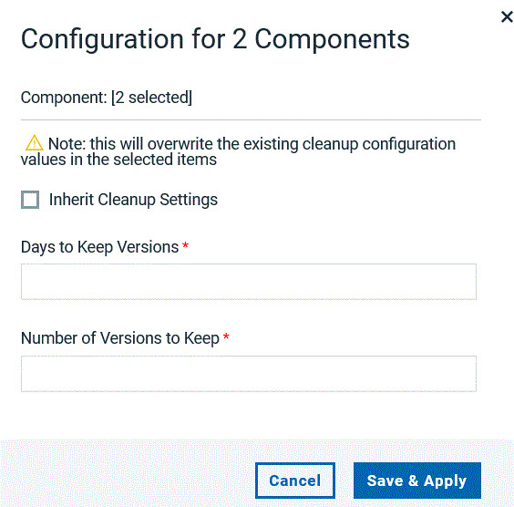
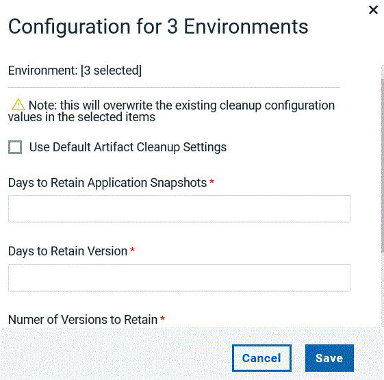

On the Cleanup Configuration page, you can edit the cleanup settings of multiple
components and environments at once.
About this task
You can specify or edit the cleanup criteria for a group of component versions and
environments.
Procedure
Open the Cleanup Configuration page by clicking Settings > Cleanup Configuration.
The list of all defined components is displayed. To set cleanup configuration for
environments, select Environments from the menu on the left.
Filter the component list by name and cleanup settings to get the results you require.
You can filter the environment list by environment and application name. To sort the list,
click on a column header.
To select all displayed rows, click Select All.
Click Set Cleanup Configuration.
The following example screen capture shows the fields that are available for components
cleanup configuration.

Use any of the following component cleanup configuration methods:
Select Inherit Cleanup Settings to use the artifacts cleanup settings
that are defined in System Settings. See System settings for more
information.
Specify Days to Keep Versions and Number of Versions to
Keep for the selected components. See Cleaning up component versions for more information about the fields.
The following example screen capture shows the fields that are available for environments
cleanup configuration.

Use any of the following environment cleanup configuration methods:
Select Use Default Artifact Cleanup Settings to retain the artifact
cleanup settings that are defined in System Settings. See System settings for more
information.
Specify Days to Retain Application Snapshots, Days to Retain
Version and Number of Versions to Retain for the selected
environments. See Cleaning up component versions for more information
about the fields.
Select Use Deployment History Cleanup Settings to set the deployment
history cleanup settings. You can choose to use the settings that are defined in System Settings by
enabling Use Default Deploy History Retention or provide a different value in
the Days to Retain Deployment History Snapshots field. See Cleaning up component versions for detailed information about these
fields.
Save your changes.
Results
The cleanup configuration for selected components and environment is saved.